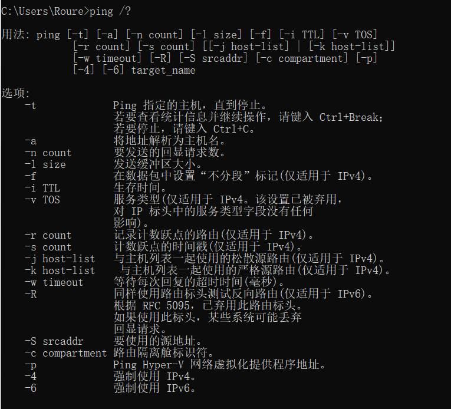
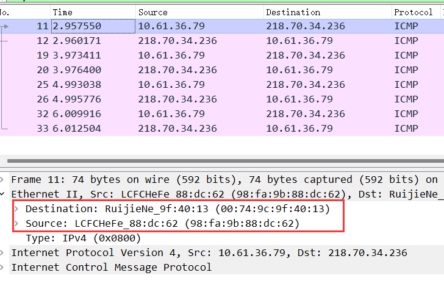
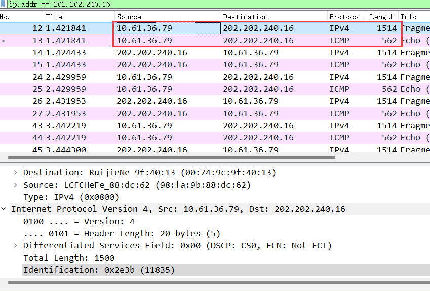
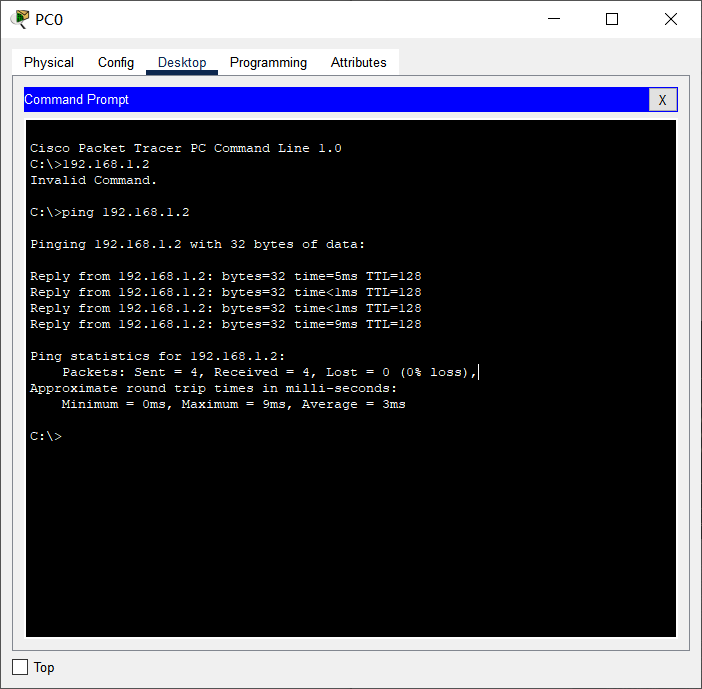
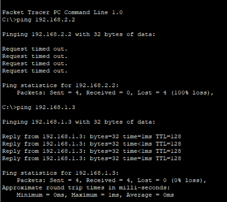

ipconfig命令显示了本地计算机上各适配器的配置。在本机上共有6个适配器，其中无线局域网适配器为虚拟机创造的虚拟网卡，以太网适配器是我们比较关注的点。
我们可以看到本机ip地址为10.61.36.79，子网掩码为255.254.0.0，网关为10.60.255.254。
通过比较，发现旁边计算机的配置与本机不同为ip地址为10.61.32.214，子网掩码和网关均相同。
处于同一子网。通过后面的学习，可以通过与运算得出网络号，网络号相同，且ISP都是交大电信，不难得出在同一子网这一结论。
网络号计算方法：ip地址和子网掩码的二进制数进行“与”运算即可得出网络号。
本机网络号为10.60.0.0,旁边计算机网络号也为10.60.0.0，故在同一子网。
可以看到计算法发出了四个数据包，接受了四个数据包，统计了丢包率和延迟等信息。
其中每条接受到的数据包包含字节、时间、TTL等信息。
字节代表数据包内的数据，时间代表往返行程所需时间(大概)，TTL代表心跳次数，可用于记录本机与服务器之间需要多少次路由。

可以看到给出了ping命令的很多种用法
该命令可以无限次向主机发出Ping命令，直到停止。
该命令可以自定义发送的数据包的字节大小。
该命令可以记录计数跃点的路由。
从图片可以发现该命令记录了从本机到服务器所经历的节点，如果已经到达了服务器但没到达指定count的话，还会记录返程所经过的路由。例如图二红框外的部分。
假设你不能 ping 通某计算机或 IP，但你确定该计算机和你之间的网络是连通的，那么可能的原因是什么？该如何处理能保证 ping 通？
你的网络出现故障不能访问某计算机如 14.215.177.39 (百度的 IP 地址之一 ) 时，我们一般可采用由近及远的连通性测试来确定问题所在。现假设你的 IP 是 192.168.1.89，你旁边计算机的 IP 是 192.168.1.64，网关的 IP 是 192.168.1.1 ，那么过程如下：
ping 127.0.0.1，测试自己计算机的状态，如果 OK，那么说明本机网络软件硬件工作正常，否则，问题在本机，检查本机 TCP/IP 配置即网卡状态等ping 192.168.1.64，测试到旁边计算机的连通性，如果OK，那么说明本子网内部工作正常，否则，问题在本机网络出口到交换机之间，检查本机网卡到交换机的连线等ping 192.168.1.1，测试到网关的连通性，如果 OK，那么说明本子网出口工作正常，否则，问题在网关，这是你无能为力的事情，报告给网管ping 14.215.177.39，测试到百度的连通性，如果 OK，那就 OK，否则，问题在网关以外，这也是你无能为力的事情，报告给网管或者李彦宏？
说明网络无问题，但本机DNS解析异常或者DNS服务器异常
检查本机DNS服务器设置，并尝试更改DNS服务器
清除DNS缓存
检查本机是否存在劫持软件
返回结果解释
- 最左侧：1,2,3..12,代表本机经过的第几个路由。
- 中间三列：单位为ms，代表本机连接到每个路由节点的速度，返回速度和多次连接的平均速度。
- 右边的ip：表示该路由节点的ip地址。
- 出现*和请求超时：表明本机与该路由的连接出现问题，有可能是服务器做了过滤限制，或者直接将TTL过期的数据包丢弃，且不返回数据，故超时。
不难发现，本机到百度服务器的访问路径如下
本机->重庆交大内网->重庆电信->xxx->广东电信->百度内网->百度服务器
tracert 能告诉我们路径上的节点以及大致的延迟等信息，那么它背后的原理是什么？本问题可结合第二部分的 Wireshark 实验进行验证。
tracert命令实质上是将包含不同生存时间 (TTL) 值的数据包发送到目标，并记录返回的信息。Tracert 先发送 TTL 为 1 的回显数据包,并在随后的每次发送过程将 TTL 递增 1，直到目标响应或 TTL 达到最大值，从而确定路由。
在以上两个实作中，如果你留意路径中的节点，你会发现无论是访问百度还是棋歌教学网，路径中的第一跳都是相同的，甚至你应该发现似乎前几个节点都是相同的，你的解释是什么？
由前文可知，前几个节点为TTL值较小的节点，换句话说，也就是离本机很近的路由节点。而本机接入Internet的路线由ISP提供，一般有且仅有一条，我们访问大多数服务器都需要经过这条路线，故前几个节点几乎相同。
在追踪过程中，你可能会看到路径中某些节点显示为 * 号，这是发生了什么？
表明本机与该路由的连接出现问题，有可能是服务器做了过滤限制，或者直接将TTL过期的数据包丢弃，且不返回数据，故超时。
删除arp缓存 并ping旁边计算机 查看改变
发现开始没有缓存然后多了很多缓存
且多了有目标ip、然后几个不清楚的静态ip 230.63.169.60、239.176.188.222 经查询是内部ip
由前文可以知道本机网关缓存如下
修改为静态
你可能会在4.3的操作中得到 “ARP 项添加失败: 请求的操作需要提升” 这样的信息，表示命令没能执行成功，你该如何解决？
操作需要提升代表权限不足，需要使用管理员权限打开命令提示符进行操作
且同时发现前面删除ARP缓存时出现删不掉 参数错误的情况。
经过网络搜寻，发现从WIN7开始就将arp -d *这个命令禁用了，可以使用netsh中的netsh interface IP delete arpcache命令进行arp缓存删除
在4.3中，为何缓存中常常有网关的信息？
我们将网关或其它计算机的 arp 信息设置为静态有什么优缺点？
有网关的信息是因为ARP的原理。ARP是根据IP地址获取物理地址的一个TCP/IP协议。主机发送信息时将包含目标IP地址的ARP请求广播到局域网络上的所有主机，并接收返回消息，以此确定目标的物理地址。而在这个过程中广播的角色由网关充当，故常常有网关的信息。
将经过的网关信息存储在缓存后，方便下次使用。
优点：稳定，避免计算机受到攻击。
缺点：维护麻烦。
DHCP（Dynamic Host Configuration Protocol）即动态主机配置协议，是一个用于 IP
网络的网络协议，位于 OSI 模型的应用层，使用 UDP 协议工作，主要有两个用途：
- 用于内部网或网络服务供应商自动分配 IP 地址给用户
- 用于内部网管理员对所有电脑作中央管理
简单的说，DHCP 可以让计算机自动获取/释放网络配置。
计算机目前已经断网
且ip地址为空
重新获取
如果你没能成功的释放，请思考有哪些可能的原因并着手进行解决？
有可能是权限不够，可以尝试用管理员身份启动
在Windows系统下，如果由于某种原因计算机不能获取 DHCP 服务器的配置数据，那么Windows将会根据某种算法自动配置为 169.254.x.x 这样的 IP 地址。显然，这样的 IP 以及相关的配置信息是不能让我们真正接入 Internet 的，为什么？既然不能接入 Internet，那么Winodws系统采用这样的方案有什么意义？
DHCP是为了内部网或者ISP自动分配ip给用户，如果ISP无法提供ip，那有一个默认同意的配置，可以让局域网内的主机也能互相进行通信。
在我校不少地方如教室，计算机都采用了 DHCP 来获得网络配置。假如某天因 DHCP 服务器问题从而不能获得网络配置，那么我们可以查看隔壁教室计算机的配置信息来手动进行网络配置，从而使该计算机能够接入 Internet。
经常的，在一个固定地方的网络配置我都喜欢采用 静态/手动配置，而不是动态 DHCP 来进行。你能想到是什么原因吗？
手动配置没有自动请求分配地址的时间延迟网络连接更迅速，而且每台机器IP固定,更便于网络管理和使用。
清除DNS缓存
使用本地DNS服务器
使用Google服务器
发现超时无法访问
科学上网后再次尝试
通过具体信息可以看出有很多文件都是从本地缓存加载获取的
可以明显看出加载时间差距巨大
你会发现 Wireshark 展现给我们的帧中没有校验字段，请了解一下原因。
Wireshark抓包前，在物理层网卡已经去掉了一些之前几层加的东西，之后利用校验码CRC校验，校验正确才会进行下一步操作，然后才有抓包的过程，所以抓到的是去掉校验码之外的数据。
经过查看，发出帧的目的 MAC 地址以及返回帧的源 MAC 地址为
98-fa-9b-8e-50-a4
为旁边电脑MAC地址
经过查看，发出帧的目的MAC地址和返回帧的MAC地址为
00-74-9c-9f-40-13
为网关MAC地址

经过查看，发出帧的目的MAC地址和返回帧的MAC地址为
00-74-9c-9f-40-13
为网关MAC地址
通过以上的实验，你会发现：
访问本子网的计算机时，目的 MAC 就是该主机的
访问非本子网的计算机时，目的 MAC 是网关的
请问原因是什么？
在同一子网内部进行访问，不通过网关，两者之间就能通信，所以目的 MAC 就是该主机的。访问不同子网下的计算机需要通过网关，所以目的 MAC 是网关的。
通过以上的实验，你应该会发现，
- ARP 请求都是使用广播方式发送的
- 如果访问的是本子网的 IP，那么 ARP 解析将直接得到该 IP 对应的 MAC；如果访问的非本子网的 IP， 那么 ARP 解析将得到网关的 MAC。
请问为什么？
当访问本子网的IP时，不需要通过网关，所以 ARP 解析将直接得到该 IP 对应的 MAC；当访问的非本子网的 IP时，是需要通过网关才能到达，第一跳就是网关，所以 ARP 解析将得到网关的 MAC。
为提高效率，我们应该让 IP 的头部尽可能的精简。但在如此珍贵的 IP 头部你会发现既有头部长度字段，也有总长度字段。请问为什么？
每个IP数据报包含一个头部和一个正文部分。头部有一个20字节的定长部分和一个可选的变长部分。头部的IHL域指明了该头部有多长（以32位字的长度为单位）。IHL最小值为5，表明头部没有可选项。此4位域的最大值为15，这限制了头部的最大长度为60字节。总长度域包含了该数据报中的所有内容，即头和数据。

分段与重组是一个耗费资源的操作，特别是当分段由传送路径上的节点即路由器来完成的时候，所以 IPv6 已经不允许分段了。那么 IPv6 中，如果路由器遇到了一个大数据包该怎么办？
大数据包会被丢弃。
在 IPv4 中，TTL 虽然定义为生命期即 Time To Live，但现实中我们都以跳数/节点数进行设置。如果你收到一个包，其 TTL 的值为 50，那么可以推断这个包从源点到你之间有多少跳？
有2^7-50=78或者2^6-50=14跳
由上大家可以看到 UDP 的头部比 TCP 简单得多，但两者都有源和目的端口号。请问源和目的端口号用来干什么？
一个进程对应一个端口号。端口号的作用就是用来区别不同进程的。源端口标识发起通信的那个进程，目的端口标识接受通信的那个进程。有了端口号，接受到报文后才能够知道将报文发送到哪个进程。
三次握手建立连接的包
SYN 同步序列号，用来发起一个TCP连接
四次挥手释放连接的包
TCP断开连接是通过发送FIN报文，来告诉对方数据已经发送完毕，可以释放连接了。
去掉 Follow TCP Stream，即不跟踪一个 TCP 流，你可能会看到访问 qige.io 时我们建立的连接有多个。请思考为什么会有多个连接？作用是什么？
它们之间的连接是属于短连接，一旦数据发送完成后，就会断开连接。虽然断开连接，但是页面还是存在，由于页面已经被缓存下来。一旦需要重新进行发送数据，就要再次进行连接。这样的连接，是为了实现多个用户进行访问，对业务频率不高的场合，节省通道的使用，不让其长期占用通道。
我们上面提到了释放连接需要四次挥手，有时你可能会抓到只有三次挥手。原因是什么？
是因为第二次握手和第三次挥手合并了，FIN报文用在本端没有数据发送给对方时，关闭从本端到对端的连接。但是并不影响从对方到本端的连接，也就是说本端仍然可以接收对方的数据。即发送通道关闭，接收通道正常。
先使用 ipconfig /flushdns 命令清除缓存，再使用 nslookup qige.io 命令进行解析，同时用 Wireshark 任意抓包（可用 dns 过滤）
你应该可以看到当前计算机使用 UDP，向默认的 DNS 服务器的 53 号端口发出了查询请求，而 DNS 服务器的 53 号端口返回了结果。
可了解一下 DNS 查询和应答的相关字段的含义
打开浏览器访问 qige.io 网站，用 Wireshark 抓包（可用http 过滤再加上 Follow TCP Stream），不要立即停止 Wireshark 捕获，待页面显示完毕后再多等一段时间以将释放连接的包捕获。
请在你捕获的包中找到 HTTP 请求包，查看请求使用的什么命令，如：GET, POST。并仔细了解请求的头部有哪些字段及其意义。
请在你捕获的包中找到 HTTP 应答包，查看应答的代码是什么，如：200, 304, 404 等。并仔细了解应答的头部有哪些字段及其意义。
200：交易成功；304：客户端已经执行了GET，但文件未变化；404：没有发现文件、查询或URl；
Cisco Packet Tracer 是由Cisco公司发布的一个辅助学习工具，为学习思科网络课程的初学者去设计、配置、排除网络故障提供了网络模拟环境。用户可以在软件的图形用户界面上直接使用拖曳方法建立网络拓扑，并可提供数据包在网络中行进的详细处理过程，观察网络实时运行情况。可以学习IOS的配置、锻炼故障排查能力
IP配置：
PC0 : 192.168.1.1
PC1 : 192.168.1.2

构建如下拓扑结构的局域网：
| 机器名 | IP | 子网掩码 |
|---|---|---|
| PC0 | 192.168.1.1 | 255.255.255.0 |
| PC1 | 192.168.1.2 | 255.255.255.0 |
| PC2 | 192.168.2.1 | 255.255.255.0 |
| PC3 | 192.168.2.2 | 255.255.255.0 |
- PC0 能否 ping 通 PC1、PC2、PC3 ？
- PC3 能否 ping 通 PC0、PC1、PC2 ？为什么？
- 将 4 台 PC 的掩码都改为 255.255.0.0 ，它们相互能 ping 通吗？为什么？
- 使用二层交换机连接的网络需要配置网关吗？为什么？
需要，因为二层交换机配置好网关后可在2个网络间建立传输连接，使不同网络上的主机间建立起跨越多个网络的级联的、点对点的传输连接
集线器 Hub 是工作在物理层的多接口设备，它与交换机的区别是什么？请在 CPT 软件中用 Hub 构建网络进行实际验证。
二层交换机是一种即插即用的多接口设备，它对于收到的帧有 3 种处理方式：广播、转发和丢弃（请弄清楚何时进行何种操作）。那么，要转发成功，则交换机中必须要有接口地址列表即 MAC 表，该表是交换机通过学习自动得到的！
仍然构建上图的拓扑结构，并配置各计算机的 IP 在同一个一个子网，使用工具栏中的放大镜点击某交换机如左边的 Switch3，选择 MAC Table，可以看到最初交换机的 MAC 表是空的，也即它不知道该怎样转发帧（那么它将如何处理？），用 PC0 访问（ping）PC1 后，再查看该交换机的 MAC 表，现在有相应的记录，请思考如何得来。随着网络通信的增加，各交换机都将生成自己完整的 MAC 表，此时交换机的交换速度就是最快的！
使用工具栏中的放大镜点击某交换机如左边的 Switch0，选择 MAC Table，可以看到最初交换机的 MAC 表是空的，当pc机之间有访问了之后就有相应的记录了
最开始交换机的 MAC 表是空的，是因为它不知道怎么转发帧，因此它会把接收到的帧广播出去；如果收到了某一个端口的回复他就知道这个帧的MAC地址并存到其MAC表里了。
用 PC4 访问（ping）PC5，PC6 后，查看交换机的 MAC 表，发现有相应的记录，这是通过ARP（地址解析协议）得来的MAC地址。
交换机在目的地址未知或接收到广播帧时是要进行广播的。如果交换机之间存在回路/环路，那么就会产生广播循环风暴，从而严重影响网络性能。
而交换机中运行的 STP 协议能避免交换机之间发生广播循环风暴。
只使用交换机，构建如下拓扑：
这是初始时的状态。我们可以看到交换机之间有回路，这会造成广播帧循环传送即形成广播风暴，严重影响网络性能。
随后，交换机将自动通过生成树协议（STP）对多余的线路进行自动阻塞（Blocking），以形成一棵以 Switch4 为根（具体哪个是根交换机有相关的策略）的具有唯一路径树即生成树！
经过一段时间，随着 STP 协议成功构建了生成树后，Switch5 的两个接口当前物理上是连接的，但逻辑上是不通的，处于Blocking状态（桔色）如下图所示：
在网络运行期间，假设某个时候 Switch4 与 Switch5 之间的物理连接出现问题（将 Switch4 与 Switch5 的连线剪掉），则该生成树将自动发生变化。Switch5 上方先前 Blocking 的那个接口现在活动了（绿色），但下方那个接口仍处于 Blocking 状态（桔色）。如下图所示：
注：
交换机的 STP 协议即生成树协议始终自动保证交换机之间不会出现回路，从而形成广播风暴。
我们模拟重庆交通大学和重庆大学两个学校的连接，构建如下拓扑：
路由器的每个接口下至少是一个子网，图中我们简单的规划了 3 个子网：
- 左边路由器是交通大学的，其下使用交换机连接交通大学的网络，分配网络号 192.168.1.0/24，该路由器接口也是交通大学网络的网关，分配 IP 为 192.168.1.1
- 右边路由器是重庆大学的，其下使用交换机连接重庆大学的网络，分配网络号 192.168.3.0/24，该路由器接口也是重庆大学网络的网关，分配 IP 为 192.168.3.1
- 两个路由器之间使用广域网接口相连，也是一个子网，分配网络号 192.168.2.0/24
现实中，交通大学和重庆大学的连接是远程的。该连接要么通过路由器的光纤接口，要么通过广域网接口即所谓的 serial 口（如拓扑图所示）进行，一般不会通过双绞线连接（为什么？）。
下面我们以通过路由器的广域网口连接为例来进行相关配置。请注意：我们选用的路由器默认没有广域网模块（名称为 WIC-1T 等），需要关闭路由器后添加，然后再开机启动。

在模拟的广域网连接中需注意 DCE 和 DTE 端（连线时线路上有提示，带一个时钟标志的是 DCE 端。有关 DCE 和 DTE 的概念请查阅相关资料。），在 DCE 端需配置时钟频率 64000
路由器有多种命令行配置模式，每种模式对应不同的提示符及相应的权限。
请留意在正确的模式下输入配置相关的命令。
- User mode：用户模式
- Privileged mode：特权模式
- Global configuration mode：全局配置模式
- Interface mode：接口配置模式
- Subinterface mode：子接口配置模式
在现实中，对新的路由器，显然不能远程进行配置，我们必须在现场通过笔记本的串口与路由器的 console 接口连接并进行初次的配置（注意设置比特率为9600）后，才能通过网络远程进行配置。这也是上图左上画出笔记本连接的用意。
在路由器的 CLI 界面中，可看到路由器刚启动成功后，因为无任何配置，将会提示是否进行对话配置（Would you like to enter the initial configuration dialog?），因其步骤繁多，请选择 NO
比如交通大学路由器的初步配置可以如下：
Router>en // 从普通模式进入特权模式 Router#conf t // 进入全局配置模式 Router(config)#interface FastEthernet0/0 Router(config-if)#ip address 192.168.1.1 255.255.255.0 Router(config-if)#no shutdown Router(config-if)#exit Router(config)#line vty 0 4 //可支持0-4共5个终端同时登录 Router(config-line)#password dswybs // 远程登录密码 Router(config-line)#login Router(config-line)#exit Router(config)#enable password dswybs // 特权模式密码 Router(config)#^Z // 退出拓扑图中路由器各接口配置数据如下：

拓扑图中各 PC 配置数据如下：
交通大学路由器基本配置如下：
重庆大学路由器基本配置如下：
现在交通大学内的各 PC 及网关相互能 ping 通，重庆大学也类似。但不能从交大的 PC ping 通重大的 PC，反之亦然，也即不能跨子网。为什么？

因为交大的PC属于同一个子网并使用交换机连接，重大内的PC属于另一个子网并且也是使用交换机连接；但是交大和重大之间的连接是通过路由器，由于路由器的路由表没有初始化，因此交大的PC不能与重大的PC通信。
静态路由是非自适应性路由协议，是由网络管理人员手动配置的，不能够根据网络拓扑的变化而改变。 因此，静态路由简单高效，适用于结构非常简单的网络。
在当前这个简单的拓扑结构中我们可以使用静态路由，即直接告诉路由器到某网络该怎么走即可。
在前述路由器基本配置成功的情况下使用以下命令进行静态路由协议的配置：

至此，这些 PC 能全部相互 ping 通！
我们的拓扑只模拟了 3 个网络。在现实中，路由器连接的网络数量非常多，我们还需要配置一条缺省路由，否则其它网络皆不能到达！当然，我们的拓扑可以不考虑。
Router(config)#ip route 0.0.0.0 0.0.0.0... // 缺省全部转发给 ... 这个IP
动态路由协议采用自适应路由算法，能够根据网络拓扑的变化而重新计算机最佳路由。
RIP 的全称是 Routing Information Protocol，是距离矢量路由的代表（目前虽然淘汰，但可作为我们学习的对象）。使用 RIP 协议只需要告诉路由器直接相连有哪些网络即可，然后 RIP 根据算法自动构建出路由表。
因为我们模拟的网络非常简单，因此不能同时使用静态和动态路由，否则看不出效果，所以我们需要把刚才配置的静态路由先清除掉。
- 直接关闭路由器电源。相当于没有保存任何配置，然后各接口再按照前面基本配置所述重新配置 IP 等参数（推荐此方法，可以再熟悉一下接口的配置命令）；
- 使用
no命令清除静态路由。在全局配置模式下，交通大学路由器使用：no ip route 192.168.3.0 255.255.255.0 192.168.2.2，重庆大学路由器使用：no ip route 192.168.1.0 255.255.255.0 192.168.2.1。相当于使用no命令把刚才配置的静态路由命令给取消。
Router>en // 从普通模式进入特权模式
Router#conf t // 进入全局配置模式
Router(config)#router rip // 启用 RIP 路由协议，注意是 router 命令
Router(config-router)#network 192.168.1.0 // 网络 192.168.1.0 与我直连
Router(config-router)#network 192.168.2.0 // 网络 192.168.2.0 与我直连
Router(config-router)#^z //直接退到特权模式
Router#show ip route //查看路由表
Router>en // 从普通模式进入特权模式
Router#conf t // 进入全局配置模式
Router(config)#router rip // 启用RIP路由协议，注意是 router 命令
Router(config-router)#network 192.168.3.0 // 网络 192.168.3.0 与我直连
Router(config-router)#network 192.168.2.0 // 网络 192.168.2.0 与我直连
Router(config-router)#^z //直接退到特权模式
Router#show ip route //查看路由表
至此，这些 PC 也能全部相互 ping 通！
可以在特权模式下使用
debug ip rip开启RIP诊断，此时会看到路由器之间不停发送的距离矢量信息，以判断网络状态是否发生改变从而更新路由表。该命令会不停的显示相关信息，打扰我们的输入，可使用no debug ip rip关闭 RIP 诊断
OSPF（Open Shortest Path First 开放式最短路径优先）是一个内部网关协议（Interior Gateway Protocol，简称 IGP）， 用于在单一自治系统（Autonomous System，AS）内决策路由。OSPF 性能优于 RIP，是当前域内路由广泛使用的路由协议
- 直接关闭路由器电源。相当于没有保存任何配置，然后各接口再按照前面基本配置所述重新配置 IP 等参数
- 使用 no 命令清除 RIP 路由。在全局配置模式下，各路由器都使用：no router rip 命令进行清除
至此，这些 PC 能全部相互 ping 通！
可以在特权模式下使用 debug ip ospf events 开启 OSPF 诊断（no debug ip ospf events 关闭诊断）， 可看到路由器之间发送的 Hello 信息用以诊断当前的链路是否发生改变以便进行路由调整（事件触发而非定时更新！）。
9.5 子网掩码
我们常见的子网掩码是所谓的正向掩码，用连续的 1 和 0 来表示，其中 1 表示需精确匹配， 0 则无需，以此得到网络号。
类似的，反向掩码也使用连续的 1 和 0 来表示，但相反，其中 0 表示需精确匹配， 1 则无需，以此得到相关的 IP，主要用于 OSPF 中。
还有一个通配符掩码，也采用与反向掩码相似的规则，主要用于访问控制列表 ACL 中。
网络地址转换（NAT，Network Address Translation）被各个 Internet 服务商即 ISP 广泛应用于它们的网络中，也包括 WiFi 网络。 原因很简单，NAT 不仅完美地解决了 lP 地址不足的问题，而且还能够有效地避免来自网络外部的攻击，隐藏并保护网络内部的计算机。
NAT 的实现方式一般有三种：
- 静态转换： Static NAT
- 动态转换： Dynamic NAT
- 端口多路复用： OverLoad
端口多路复用使用最多也最灵活。OverLoad 是指不仅改变发向 Internet 数据包的源 IP 地址，同时还改变其源端口，即进行了端口地址转换（PAT，Port Address Translation）。
采用端口多路复用方式，内部网络的所有主机均可共享一个合法外部 IP 地址实现对 Internet 的访问，从而可以最大限度地节约IP地址资源。 同时，又可隐藏网络内部的所有主机，有效避免来自 Internet 的攻击。因此，目前网络中应用最多的就是端口多路复用方式。
我们仍然使用重庆交通大学和重庆大学两个学校的拓扑进行 PAT 实验。我们需要保证两个学校的路由已经配置成功，无论使用静态路由还是动态路由，以下我们给出完整的配置过程：设定这两个学校的路由器使用 OSPF 协议，模拟交通大学使用内部 IP 地址（192.168.1.0/24），模拟重庆大学使用外部 IP 地址（8.8.8.0/24），两个路由器之间使用外部 IP 地址（202.202.240.0/24），在交通大学的出口位置即广域网口实施 PAT。
请留意重庆大学两个 PC 的网络配置发生改变，我们模拟为外部/公网 IP 地址！
请留意重庆大学路由器两个接口及交通大学广域网口的网络配置发生改变，然后配置 OSPF 路由，最后在交通大学路由器的广域网口实施 PAT！
下面我们将重庆大学的路由器看着 Internet 中的骨干路由器，那么这些路由器将不会转发内部/私有 IP 地址的包（直接丢弃）。我们通过在重庆大学路由器上实施访问控制 ACL ，即丢弃来自交通大学（私有 IP 地址）的包来模拟这个丢包的过程。
此时，再使用交通大学内部的 PC0（192.168.1.2）来 ping 重庆大学的 PC2（8.8.8.2）就不成功了，会显示目的主机不可到达（Destination host unreachable）信息。
ping 的同时，在 CPT 软件中使用模拟（Simulation）方式会看得非常清楚：重庆大学路由器的广域网口将来自交通大学的包丢弃了！
下面，我们就开始实施 PAT。即：我们将会在交通大学路由器的出口上将内部/私有 IP 地址转换为外部/公开 IP，从而包的源 IP 发生了改变，就不会被重庆大学路由器丢弃，因此网络连通。
现在，再次使用交通大学内部的 PC0（192.168.1.2）来 ping 重庆大学的PC2（8.8.8.2）则OK。
在实际网络中（如），你可看到路由器一般位于网络的边界，而内部几乎全部使用交换机连接。
前面我们分析过，交换机连接的是同一个子网！ 显然，在这样一个大型规模的子网中进行广播甚至产生广播风暴将严重影响网络性能甚至瘫痪。
另外我们也已经知道，其实学校是划分了 N 多个子网的，那么这些交换机连接的就绝不是一个子网！这样矛盾的事情该如何解释呢？我们实际上使用了支持 VLAN 的交换机！而前述的交换机只是普通的 2 层交换机（或者我们把它当作 2 层交换机在使用。
VLAN（Virtual Local Area Network）即虚拟局域网。通过划分 VLAN，我们可以把一个物理网络划分为多个逻辑网段即多个子网。
划分 VLAN 后可以杜绝网络广播风暴，增强网络的安全性，便于进行统一管理等。

Cisco 2960 交换机是支持 VLAN 的交换机，共有 24 个 100M 和 2 个 1000M 以太网口。默认所有的接口都在 VLAN 1 中，故此时连接上来的计算机都处于同一 VLAN，可以进行通信。
下面我们就该交换机的 24 个 100M 接口分为 3 个部分，划分到 3 个不同的 VLAN 中，id 号分别设为 10、20、30，且设置别名（computer、communication、electronic）以利于区分和管理。
此时可以使用 ping 命令进行测试，你会发现只有在同一 VLAN 中的 PC 才能通信，且广播也局限于该 VLAN。
用PC14分别ping一下PC15和PC18：
前一个实验我们在交换机上进行了 VLAN 的规划和划分。但在实际应用中，我们绝不允许在这些支持VLAN的交换机上进行随意的 VLAN 划分，如此将造成管理混乱！VLAN的划分必须得到统一的规划和管理，这就需要 VTP 协议。
VTP（VLAN Trunk Protocol）即 VLAN 中继协议。VTP 通过 ISL 帧或 Cisco 私有 DTP 帧（可查阅相关资料了解）保持 VLAN 配置统一性，也被称为虚拟局域网干道协议，它是思科私有协议。 VTP 统一管理、增加、删除、调整VLAN，自动地将信息向网络中其它的交换机广播。
此外，VTP 减小了那些可能导致安全问题的配置，只要在 VTP Server 做相应设置，VTP Client 会自动学习 VTP Server 上的 VLAN 信息。
作为干线，两个 2960 交换机和核心的 3560 交换机应该使用 Gbit 口相连。这虽然不是必须，但现实中这样连接性能最好。
3560 交换机是网络中的核心交换机，我们将其作为 VTP Server，VTP 域及 VLAN 将在其上创建和管理。
两个 2960 交换机是是局域网中的汇聚层/接入层交换机，将作为 VTP Client，可决定加入的 VTP 域和 VLAN。
目前该网络都属于 VLAN 1，也即这些 PC 是可以相互通信的。前面说过，无论对于性能、管理还是安全等而言，现实中我们必须进行 VLAN 划分。
现在我们的要求是：新建两个 VLAN，然后让 PC0 和 PC1 属于 VLAN 2，PC1 和 PC3 属于 VLAN 3。
我们将在核心交换机 3560上进行如下工作：
- 设置为 server 模式，VTP 域为 cqjtu
- 新建 VLAN 2，网络号 192.168.1.0/24，网关 192.168.1.1
- 新建 VLAN 3，网络号 192.168.2.0/24，网关 192.168.2.1
我们将在左边交换机 2960A 上进行如下工作：
- 加入名为 cqjtu 的 VTP 域
- 配置与核心交换机 3560 连接的千兆接口 g0/1 为 trunk 模式
- 将接口 f0/1 划分到 VLAN 2 中
- 将接口 f0/2 划分到 VLAN 3 中
我们将在右边交换机 2960B 上进行同样的工作：
- 加入名为 cqjtu VTP 域
- 配置与核心交换机 3560 连接的千兆接口 g0/1 为 trunk 模式
- 将接口 f0/1 划分到 VLAN 2 中
- 将接口 f0/2 划分到 VLAN 3 中
VTP配置完毕，同 VLAN 可以 ping 通，而不同 VLAN 不行（即使在同一交换机下，如从 PC0 到 PC1），且能够方便的统一规划和管理
使用 PC0（192.168.1.2） ping PC1（192.168.2.2） 发现不通；使用 PC0 ping PC2 的发现可以ping通，说明不管是否在同一交换机下，只要处于同一VLAN即可ping通，反之则不行

VTP 只是给我们划分和管理 VLAN 提供了方便，由上面的测试得知，目前我们仍然不能在 VLAN 间通信。
因为默认的，VLAN 间是不允许进行通信，此时我们需要所谓的独臂路由器在 VLAN 间为其进行转发！
我们使用的核心交换机 3560 是个 3 层交换机，可工作在网络层，也称路由交换机，即具有路由功能，能进行这种转发操作。
现在再使用 PC0（192.168.1.2） ping PC1（192.168.2.2） 的结果如何？使用 PC0 ping PC2 的结果如何？
现在能Ping通了
动态主机配置 DHCP、域名解析 DNS 以及 Web 服务在日常应用中作用巨大，我们构建如下简单的拓扑来进行练习。
该拓扑中，服务器及客户机都连在同一交换机上。为简单起见，服务器 Server-PT 同时作为 DHCP、DNS 以及 Web 服务器，各客户机无需配置，将自动获取网络配置。
点击 CPT 拓扑图中的 Server 图标，设置其静态 IP 地址为19.89.6.4/24，然后选择Service进行如下相关配置：
到这里就配置好了
我们在 DNS 服务器中把谷歌和百度的 IP 都设为了 19.89.6.4，即 Server-PT，所以，如果打开 PC0 的浏览器，输入 www.google.com 或者 www.baidu.com，我们都应该看到默认的 Server-PT 这个 Web 服务器的主页
WLAN 即 WiFi 当前也是广泛的应用在各种场景。 我们通过构建如下拓扑的一个家庭 WLAN 来练习一下其相关的配置：

笔记本及台式机默认只有有线网卡，请先关机，在关机状态下删除有线网卡，添加无线网卡，然后再开机。
一般地，我们需要配置无线路由器的基本网络配置（IP、掩码、网关、DNS 等，现实中多为自动获取），然后再配置无线路由器的无线访问部分如连接密码及加密类型等，并开启 DHCP 功能等。有关配置请参考相关资料。